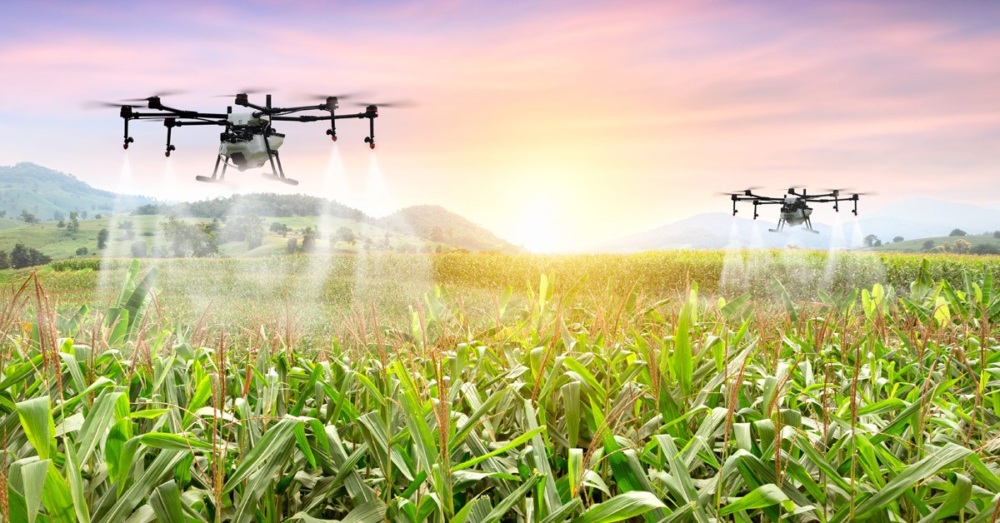

Agricultural Innovation
Investing in agricultural innovation is crucial for increasing food production and resilience to climate change. This includes promoting sustainable farming practices such as agroecology, precision agriculture, and drought-resistant crop varieties. Additionally, supporting small-scale farmers with access to technology, training, and resources can enhance productivity and livelihoods.